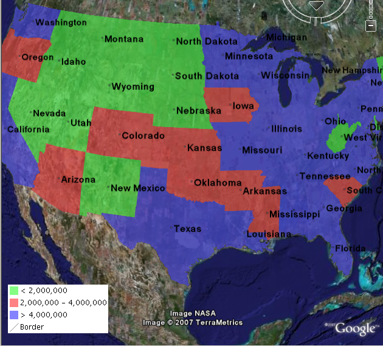

KML Legends¶
WMS includes a GetLegendGraphic operation which allows a WMS client to obtain a legend graphic from the server for a particular layer. Combining the legend with KML overlays allows the legend to be viewed inside Google Earth.
To get GeoServer to include a legend with the KML output, append legend=true to the KML reflector request. For example:
http://localhost:8080/geoserver/wms/kml?layers=topp:states&legend=true
The resulting Google Earth output looks like this:

Previous: KML Height and Time
Next: Filters